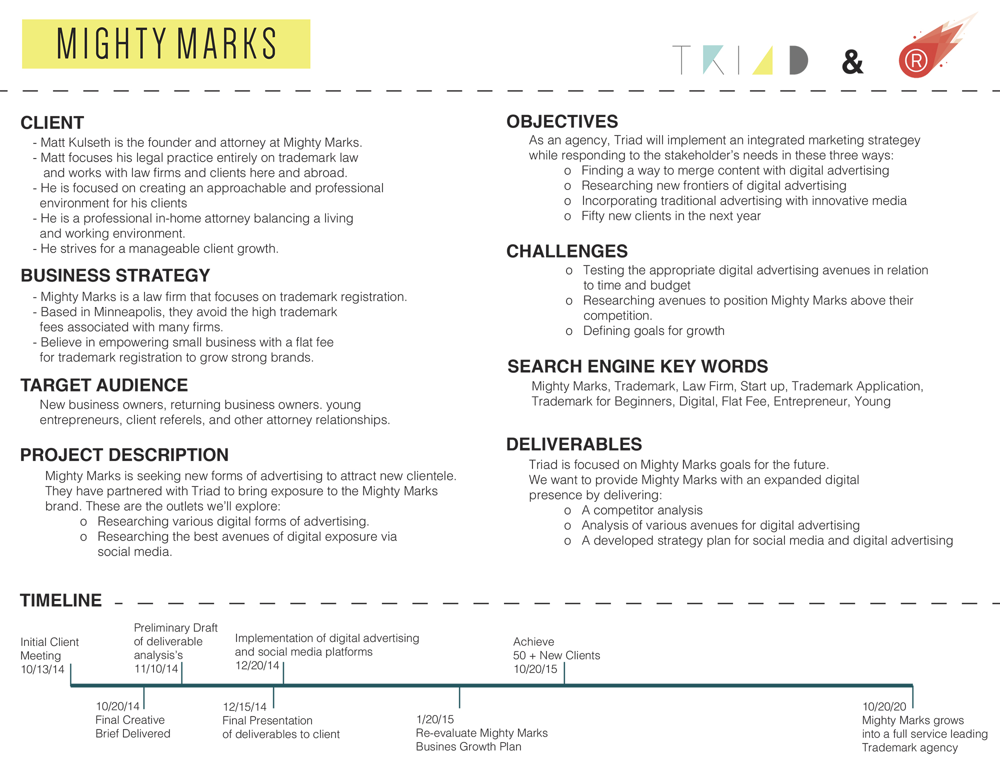
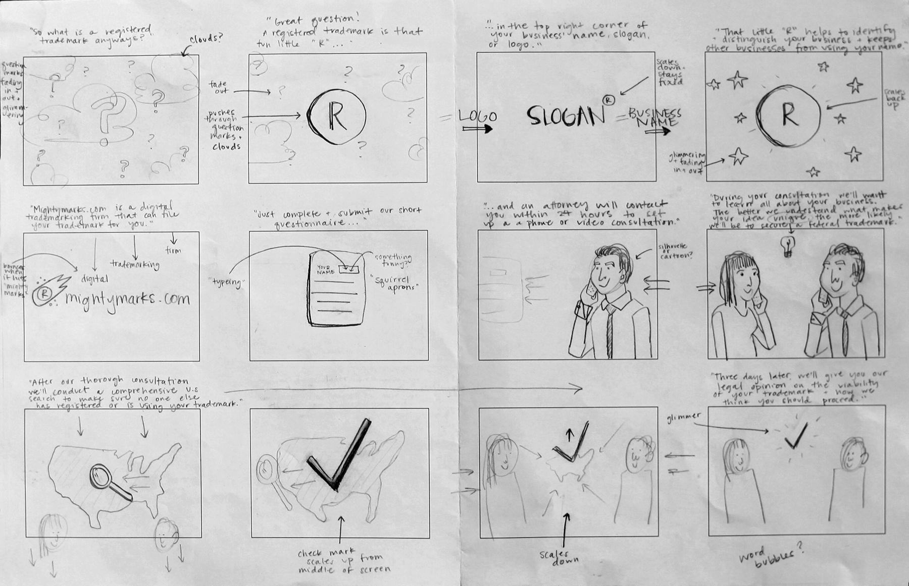
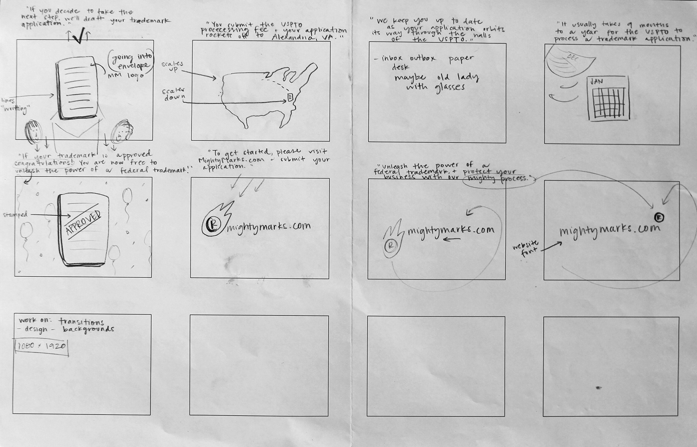

This is a video created for Mighty Marks, an up and coming digital trademarking agency from Minneapolis. This video was created through the Client Studio class at MCAD, where I worked on a team with two other students, functioning as an "agency."
Matt, the founder of Mighty Marks, told us he felt Mighty Marks lacked an established online presence, and wanted the company to obtain 50 new clients by October 2015. Our agency then went on to create a creative brief of our values, and what we wanted to accomplish for Mighty Marks. We researched trademarking, competition, target audience, and began forming marketing ideas and strategies to help Mighty Marks obtain a stronger online presence. Through many deliberations and discussions we came to the conclusion that an SEO improvement, a social media strategy, and an advertising video were Mighty Mark's best options.
From there my two other two teammates worked on SEO and social media, while I worked on the video. This video was created to inform the target audience while also staying true to the Mighty Marks brand.
Narration by Brendan Lauer
Music by Ethan Hauser


